長期トレンド
JKMとJEPXシステムプライスの推移グラフ
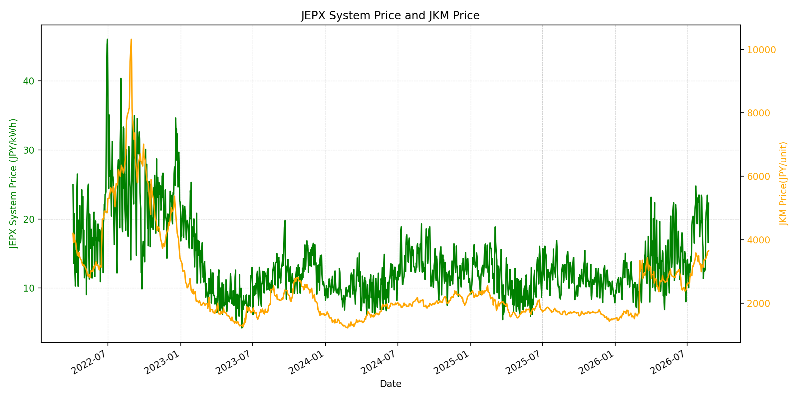
WTIの推移グラフ
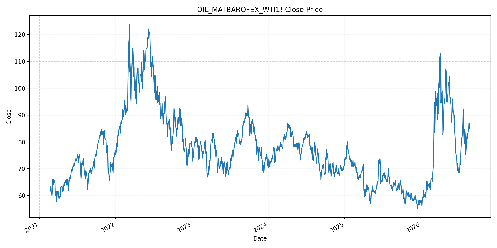
JEPXエリアプライスグラフ（直近一年分）
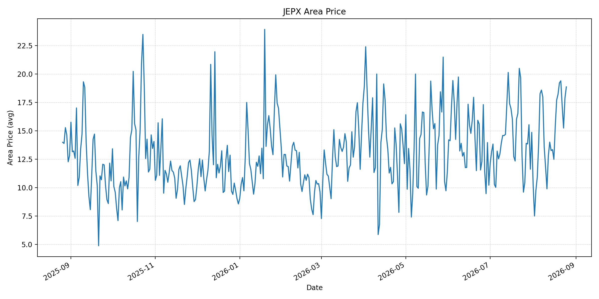
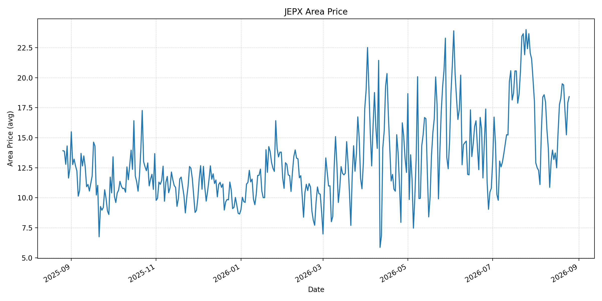
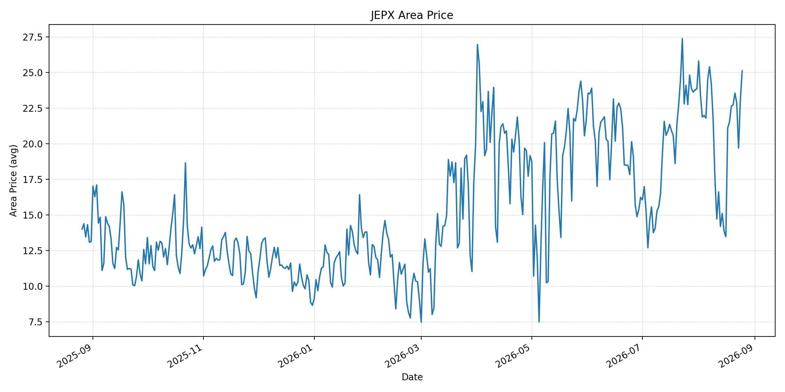
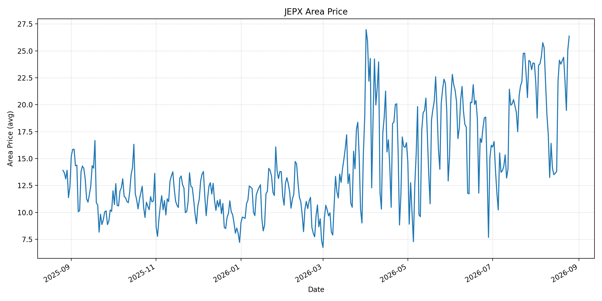
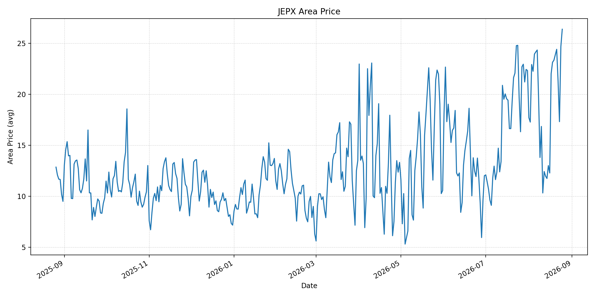
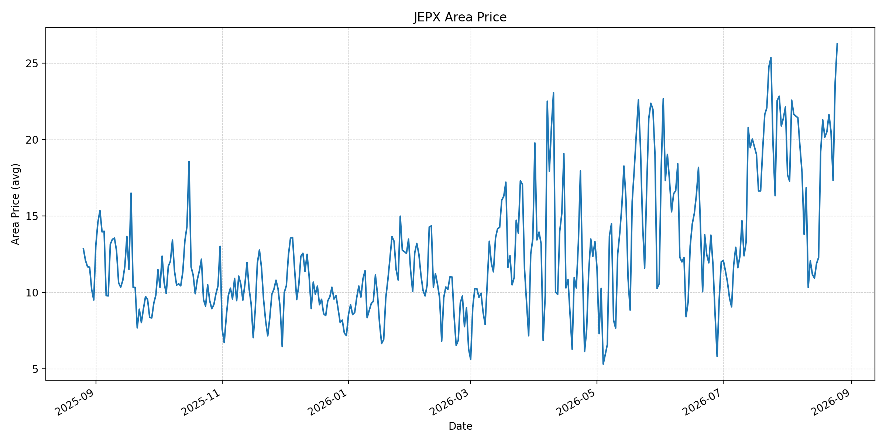
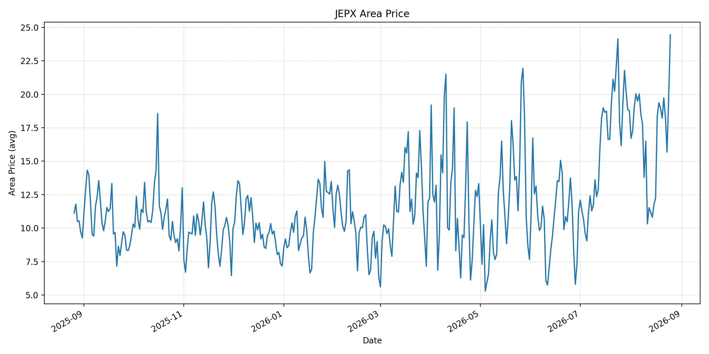
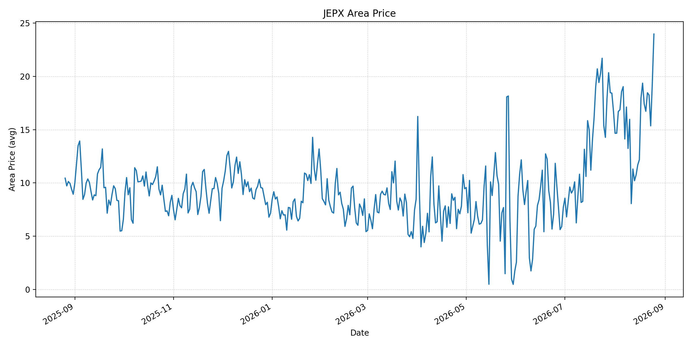
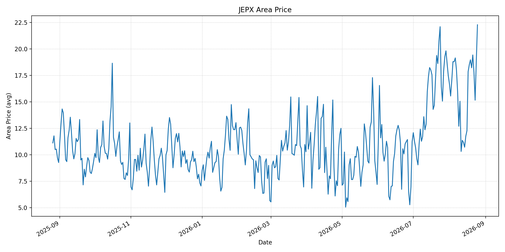
短期トレンド
JKMとJEPXシステムプライスの推移グラフ
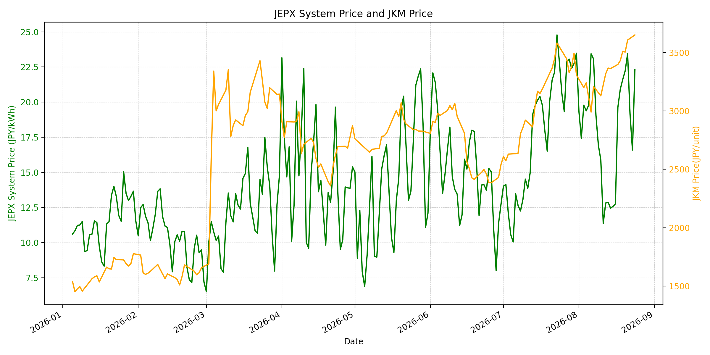
WTIの推移グラフ
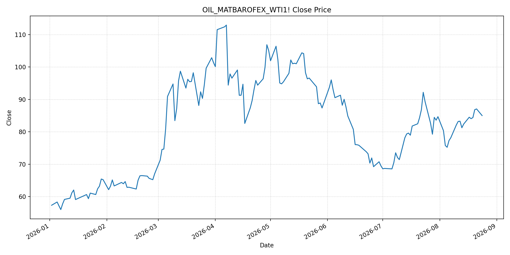
JEPXシステムプライス
JEPXは受渡日ベースの最新非空値で評価しています。最新値は 2026-08-25 分です。先週終値は 2026-08-18、先月終値は 2026-07-31 時点の直近値で評価しています。
| エリア | 当日価格 | 前日価格 | 前日比（％） | 先週終値 | 先週比（％） | 先月終値 | 先月比（％） | 過去最高値 | 最高値比（％） |
|---|---|---|---|---|---|---|---|---|---|
| システム | 25.18 | 22.31 | 12.86 | 20.92 | 20.36 | 23.48 | 7.24 | 64.06 | -60.70 |
| 北海道 | 18.86 | 17.87 | 5.54 | 17.70 | 6.55 | 14.86 | 26.92 | 73.92 | -74.48 |
| 東北 | 18.42 | 17.91 | 2.85 | 17.75 | 3.77 | 18.04 | 2.11 | 84.92 | -78.31 |
| 東京 | 25.12 | 23.11 | 8.70 | 21.53 | 16.67 | 23.85 | 5.32 | 86.13 | -70.83 |
| 中部 | 26.37 | 25.04 | 5.31 | 24.13 | 9.28 | 23.83 | 10.66 | 52.06 | -49.35 |
| 北陸 | 26.37 | 24.67 | 6.89 | 23.13 | 14.01 | 22.32 | 18.15 | 46.48 | -43.27 |
| 関西 | 26.27 | 23.75 | 10.61 | 21.28 | 23.45 | 22.13 | 18.71 | 46.48 | -43.49 |
| 中国 | 24.44 | 19.87 | 23.00 | 19.37 | 26.17 | 18.78 | 30.14 | 46.48 | -47.42 |
| 四国 | 23.98 | 19.33 | 24.06 | 19.37 | 23.80 | 16.74 | 43.25 | 46.48 | -48.41 |
| 九州 | 22.28 | 18.82 | 18.38 | 18.51 | 20.37 | 17.46 | 27.61 | 40.54 | -45.05 |
LNG先物価格
最新値は 2026-08-24 の LNG(close) です。前日価格は 2026-08-21、先週終値は 2026-08-17、先月終値は 2026-07-31 時点の直近値で評価しています。
| 当日価格 | 前日価格 | 前日比（％） | 先週終値 | 先週比（％） | 先月終値 | 先月比（％） | 過去最高値 | 最高値比（％） |
|---|---|---|---|---|---|---|---|---|
| 3651.00 | 3607.00 | 1.22 | 3398.00 | 7.45 | 3307.00 | 10.40 | 10319.00 | -64.62 |
石油先物価格
最新値は 2026-08-24 の OIL(close) です。前日価格は 2026-08-21、先週終値は 2026-08-17、先月終値は 2026-07-31 時点の直近値で評価しています。
| 当日価格 | 前日価格 | 前日比（％） | 先週終値 | 先週比（％） | 先月終値 | 先月比（％） | 過去最高値 | 最高値比（％） |
|---|---|---|---|---|---|---|---|---|
| 85.01 | 87.06 | -2.35 | 84.50 | 0.60 | 84.67 | 0.40 | 123.70 | -31.28 |
ニュース
イラン情勢に関するニュース
- 米国は8月24日、イランを対象とする新たな制裁を発表し、対イラン取引を行う国にも金融関係を断つよう警告しました。参照: AP, 2026-08-24
- イランは新制裁への支持を「戦争行為」と見なすと警告しており、外交的な出口はなお不透明です。参照: AP, 2026-08-24
ホルムズ海峡経由の石油・LNGに関するニュース
- APは、ホルムズ海峡の通航がほぼ停止に近い状態にあり、イランによる船舶への攻撃・威嚇が世界経済への圧力を高めていると報じています。参照: AP, 2026-08-24
- イランは45隻のタンカーを違反船として指定し、罰金、拘束、積荷没収の可能性を示しました。運航・保険リスクは継続しています。参照: Reuters, 2026-08-24
ホルムズ海峡経由でない石油・LNGに関するニュース
- 過去24時間で、ホルムズ以外のLNG供給量を直接変更する主要な新規公表は確認できませんでした。
- 日本はホルムズ回避航路を使う原油・ナフサ輸送コストへの支援を進め、国家備蓄を純輸入90日分へ速やかに復元する方針を承認しました。参照: S&P Global, 2026-08-24
日本国内のイラン戦争に関係するニュース
- 8月24日の政府方針では、ホルムズ海峡などのチョークポイントを通らない輸送経路のコスト支援と、原油備蓄を90日分へ回復する措置が示されました。参照: S&P Global, 2026-08-24
- 過去24時間で、JEPX制度または国内電力需給ルールを直接変更する主要な新規公表は確認できませんでした。
インサイト
ニュース事項による日本の電力市場への影響（短期：数日〜1週間）
- JEPXシステムプライスは 25.18 円/kWhで前日比 12.86%、先週比 20.36% と上昇しました。中部・北陸は 26.37 円/kWh、関西は 26.27 円/kWhで高い水準です。
- LNGは 3651.00 で先週比 7.45%、WTIは 85.01 ドルで 0.60% 上昇しました。制裁強化と45隻への通航制限は、燃料調達の不確実性を維持する要因です。
- 短期では、回避航路支援は供給途絶リスクを和らげ得ますが、海峡の実通航量と保険条件が改善しない限り、燃料・電力価格の上振れリスクは残ります。
ニュース事項による日本の電力市場への影響（長期：1ヶ月〜半年）
- JEPXシステムは先月比 7.24%、LNGは 10.40%、WTIは 0.40% です。燃料高が続けば、火力限界費用へ段階的に波及する可能性があります。
- 四国は先月比 43.25%、中国 30.14%、九州 27.61% と上昇しています。エリア別の需給と連系制約を燃料市況と併せて確認する必要があります。
- 過去最高値比ではシステム -60.70%、LNG -64.62%、WTI -31.28% です。中長期では、備蓄回復の進捗、回避航路の実効性、ホルムズの安全な通航回復を分けて監視することが重要です。